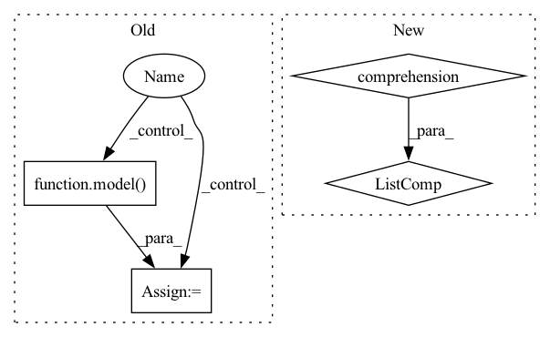

Pattern ID :38292
Before Change
segment_ids = segment_ids.to(args.device)
with torch.no_grad():
if args.mlm :
outputs = model( inputs, masked_lm_labels=labels, position_ids=position_ids, token_type_ids=segment_ids)
else:
if args.model_type == "bart":
decoder_input_ids = labels[:, :-1].contiguous()
decoder_input_ids[decoder_input_ids == args.mlm_ignore_index] = tokenizer.pad_token_idAfter Change
// debugging
if args.debug:
print()
print([tokenizer.decode(t, skip_special_tokens=True) for t in lm_logits.max(-1)[1]] )
assert lm_logits.shape[-1] == model.config.vocab_size
In pattern: SUPERPATTERN
Frequency: 4
Non-data size: 4
Instances Fragment ID: 109555479
Project Name: stanford-oval/genienlp
Commit Name: b84a6548a69fd9f62652eed1c74fd4b1fdb8b65b
Time: 2020-11-15
Author: mehrad@stanford.edu
File Name: genienlp/paraphrase/run_lm_finetuning.py
M Class Name: AnonimousClass
N Class Name: AnonimousClass
M Method Name: evaluate(5)
N Method Name: evaluate(5)
M Parent Class:
N Parent Class:
M File Name: genienlp/paraphrase/run_lm_finetuning.py
N File Name: genienlp/paraphrase/run_lm_finetuning.py
M Start Line: 318
M End Line: 344
N Start Line: 330
N End Line: 369
Before Change
"""
true_labels = []
pred_labels = []
for i, l, p in tqdm(target_data_set, total=len(target_data_set)):
true_labels.append(l)
target_img_tensor = i.unsqueeze(0)
// target_img_tensor = i.unsqueeze(1)
with torch.no_grad():
model.to(device)
target_img_tensor.to(device)
model.eval()
out = model( target_img_tensor)
ps = torch.exp(out)
prediction_percentages = (ps.cpu().numpy()[0]).tolist()
pred = prediction_percentages.index(max(prediction_percentages))
pred_labels.append(pred)
After Change
out = model(imgs)
// ps = torch.exp(out)
ps = out
pr = [(i.tolist()).index(max(i.tolist())) for i in ps]
pred_labels = pred_labels+pr
cm = metrics.confusion_matrix(true_labels, pred_labels) Fragment ID: 109555478
Project Name: radtorch/radtorch
Commit Name: 8122128d39112011e292071d336ed2e52abd8008
Time: 2020-03-01
Author: elbanan@users.noreply.github.com
File Name: radtorch/visutils.py
M Class Name: AnonimousClass
N Class Name: AnonimousClass
M Method Name: show_confusion_matrix(6)
N Method Name: show_confusion_matrix(6)
M Parent Class:
N Parent Class:
M File Name: radtorch/visutils.py
N File Name: radtorch/visutils.py
M Start Line: 312
M End Line: 327
N Start Line: 312
N End Line: 328
Before Change
criterion = build_criterion(config["training"]).to(device=device)
for data, mask, bboxes, _ in tqdm(loader):
// Put data to gpu
data, mask = data.to(device=device), mask.to(device=device)
targets = []
for item in bboxes:
target = {
"boxes": item[0].to(dtype=torch.float, device=device),
"labels": torch.tensor(item[1]).to(device=device)
}
targets.append(target)
// Make prediction
out = model( data, mask)
loss = criterion(out, targets)
loss.backward()
After Change
param_dicts = [
{"params": [p for n, p in model.named_parameters() if "backbone" not in n and p.requires_grad]},
{
"params": [p for n, p in model.named_parameters() if "backbone" in n and p.requires_grad] ,
"lr": float(config["training"]["lr_backbone"])
},
] Fragment ID: 109555475
Project Name: bwittmann/transoar
Commit Name: fbe1515fe14ebf81c18bcf86c27bd7cb4ac79e7e
Time: 2021-11-22
Author: bastian.wittmann@tum.de
File Name: scripts/train.py
M Class Name: AnonimousClass
N Class Name: AnonimousClass
M Method Name: train(1)
N Method Name: train(1)
M Parent Class:
N Parent Class:
M File Name: scripts/train.py
N File Name: scripts/train.py
M Start Line: 15
M End Line: 42
N Start Line: 15
N End Line: 41
Before Change
Model = dynamic_load(extractors, conf["model"]["name"])
model = Model(conf["model"]).eval().to(device)
for data in tqdm(loader):
name = data["name"][0] // remove batch dimension
if name in skip_names:
continue
pred = model( map_tensor(data, lambda x: x.to(device)))
pred = {k: v[0].cpu().numpy() for k, v in pred.items()}
pred["image_size"] = original_size = data["original_size"][0].numpy()
if "keypoints" in pred:After Change
feature_path.parent.mkdir(exist_ok=True, parents=True)
skip_names = set(list_h5_names(feature_path)
if feature_path.exists() and not overwrite else ())
dataset.names = [n for n in dataset.names if n not in skip_names]
if len(dataset.names) == 0:
logger.info("Skipping the extraction.")
return feature_path
Fragment ID: 109555471
Project Name: cvg/hierarchical-localization
Commit Name: 7e6551d78cbb8898520832851614a3438cb2cde7
Time: 2022-11-02
Author: Skydes@users.noreply.github.com
File Name: hloc/extract_features.py
M Class Name: AnonimousClass
N Class Name: AnonimousClass
M Method Name: main(7)
N Method Name: main(7)
M Parent Class:
N Parent Class:
M File Name: hloc/extract_features.py
N File Name: hloc/extract_features.py
M Start Line: 235
M End Line: 256
N Start Line: 233
N End Line: 252